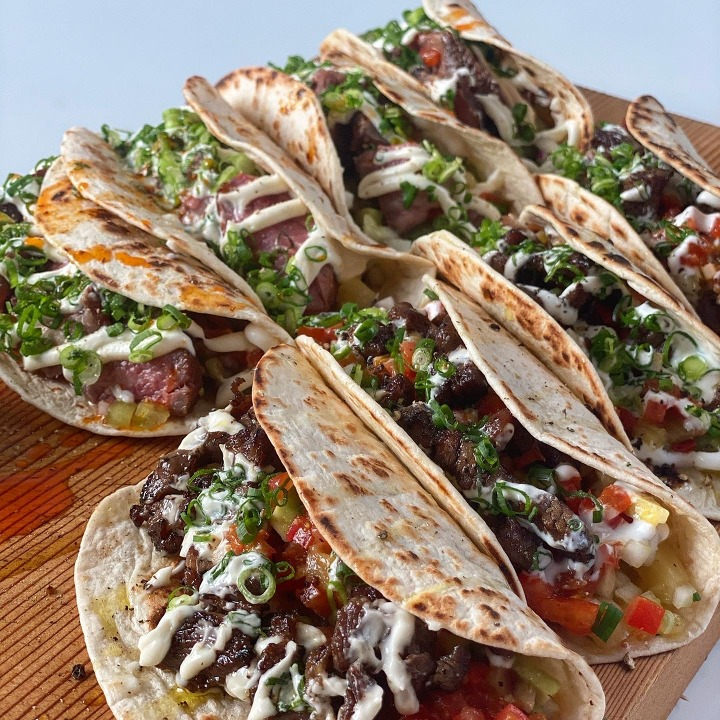

- 삼겹살
- 곱창
- 타코
타코
멕시코에 유럽인이 오기 전의 타코는 현재와는 쌩판 다른 음식으로 토르티야에 작은 생선이나 야채를 넣어서 먹는 음식이었다고 한다. 기록상으로 남은 최초로 이런 형태의 타코를 먹은 유럽인은 스페인의 정복자 에르난 코르테스이다. 때문에 '전통 타코'라고 하면 대개 생선 타코를 뜻한다. 현대의 우리가 아는 형태의 타코는 레바논 및 근동의 이민자들이 멕시코로 이민오면서 형성된 것으로, 샤와르마와 결합되어 나타난 형태이다. 멕시코인들이 돼지고기를 사용하였기 때문에 최종적으로 더 맛있게 만들었다는 우스갯소리도 있다만, 당시 이민 온 아랍계 멕시코인들은 대부분 아랍계 기독교인이었다. 지금도 멕시코에서는 아랍계 출신들이 손맛이 좋은 것으로 유명하다고 한다.
